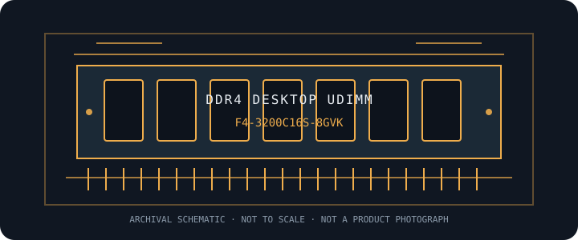

[ MANUFACTURER MODEL // MEMORY / RAM ]
G.SKILL Ripjaws V F4-3200C16S-8GVK
G.SKILL Ripjaws V desktop DDR4 UDIMM; 8 GB at DDR4-3200 CL16. This model-specific archive entry identifies the manufacturer SKU; confirm the exact suffix and revision before use.

EXACT ID: G.SKILL Ripjaws V F4-3200C16S-8GVK. Verify the complete label, revision, and SPD before compatibility decisions; retail families can include electrically different variants.
Model specifications
| Manufacturer / part ID | G.SKILL Ripjaws V F4-3200C16S-8GVK |
|---|---|
| Class / form factor | DDR4 desktop 288-pin UDIMM; unbuffered, non-ECC; single desktop module. |
| Capacity / package | 8 GB single module |
| Data rate / bandwidth class | 3200 MT/s (PC4-25600) |
| Primary timings | 16-18-18-38 at rated profile. Confirm SPD tables and revision-specific secondary timings from the exact module or kit label. |
| Voltage / profile | 1.35 V at rated profile; XMP-rated speed requires platform support and may not be available at default firmware settings. |
| ECC / buffering | Unbuffered, non-ECC at the system interface. DDR5 on-die ECC is internal to DRAM devices and does not provide host-visible system ECC. |
| Compatibility | Desktop DDR4 288-pin UDIMM only. This product is unbuffered and non-ECC at the system interface; DDR5 on-die ECC is not system-level ECC. CPU and motherboard must support the generation, capacity, organization, and requested rate. XMP-rated speed requires platform support and may not be available at default firmware settings. |
Compatibility, service & archive notes
- Desktop DDR4 288-pin UDIMM only. This product is unbuffered and non-ECC at the system interface; DDR5 on-die ECC is not system-level ECC. CPU and motherboard must support the generation, capacity, organization, and requested rate. XMP-rated speed requires platform support and may not be available at default firmware settings.
- DDR4 and DDR5 DIMMs use different electrical interfaces and keyed sockets despite both having 288 contacts; do not interchange or force modules.
- Rated profile speeds can exceed a processor's official memory specification; system training may select a lower rate depending on CPU, board, firmware, population, and module organization.
- Power down and follow the host service manual. Use ESD precautions, handle the module by its edges, and follow the board's recommended paired-slot order.
Preservation record
Photograph the full product label, preserve a read-only SPD dump, and note the module revision, host slot, CPU, motherboard, firmware, configured rate/timings/voltage, test method, and observed errors.
Manufacturer & standards references
- G.SKILL Ripjaws V — F4-3200C16S-8GVK manufacturer product specificationPrimary product-family or SKU reference; compare the exact part number and revision printed on the sample.
- JEDEC JESD79-4 — DDR4 SDRAMJEDEC generation standard for interface context; it does not qualify this SKU for a particular platform or guarantee an overclocked profile.
For final qualification, consult the exact motherboard and CPU documentation and supported-memory list; label and SPD provide specimen-level evidence.